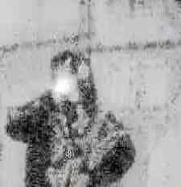

blueZoe
Member since March 25, 2026 •
Biography
zoe (known professionally as blueZoe and delinquente) is a musical and visual artist from Belgium. She began her musical journey in April 2024 using a tracker, eventually transitioning to FL Studio later that year to craft experimental chiptune and digicore instrumentals.
She quickly built a diverse catalog, releasing projects like RBY (and its deluxe edition) in early 2025, the cloud rap-inspired instrumental concept album blue world, and her highly varied mixtape ZOECORE. Continuing to expand her sonic footprint, she released her debut single under her alternative alias "delinquente" in April 2026.
Drawing deep inspiration from artists like Jane Remover, CXO, gl0wrm, and her peers within RAINOUT, blueZoe continues to push the boundaries of her distinct audiovisual style.